Ellipse Problems
1Calculate and plot the coordinates of the foci and vertices and determine the eccentricity of the following ellipses:
1
2
3
4
2Calculate and plot the coordinates of the foci and vertices and determine the eccentricity of the following ellipses:
1 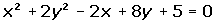
2 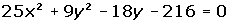
3 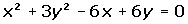
4 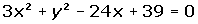
3Determine the equations of the following ellipses using the information given:
1
2
3
4 
4Determine the equation of the ellipse that is centered at (0, 0), passes through the point (2, 1) and whose minor axis is 4.
5The focal length of an ellipse is 4 and the distance from a point on the ellipse is 2 and 6 units from each foci respectively. Calculate the equation of the ellipse if it is centered at (0, 0).
6Determine the equation of the ellipse which is centered at (0, 0) and passes through the points:.
7Find the coordinates of the midpoint of the chord in the line: x + 2y − 1 = 0 which intersects the ellipse: x2 + 2y2 = 3.
8Determine the equation of the ellipse centered at (0, 0) whose focal length is and the area of a rectangle in which the ellipse is inscribed within is 80 u2.
9Find the equation of the locus of points P (x, y) whose sum of distances to the fixed points (4, 2) and (−2, 2) is equal to 8.
10Determine the equation of the ellipse centered at (0, 0) knowing that one of its vertices is 8 units from a focus and 18 from the other.
11Determine the equation of the ellipse centered at (0, 0) knowing that it passes through the point (0, 4) and its eccentricity is 3/5.
1
Calculate and plot the coordinates of the foci and vertices and determine the eccentricity of the following ellipses:
1

2
3
4
2
Calculate and plot the coordinates of the foci and vertices and determine the eccentricity of the following ellipses:
1
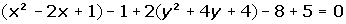


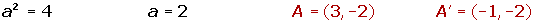
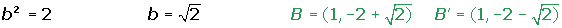

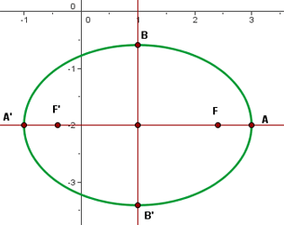
2

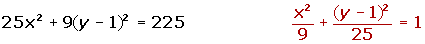


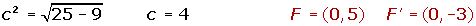

3
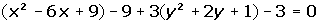


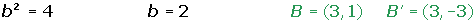
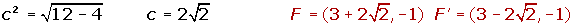

4
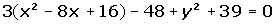
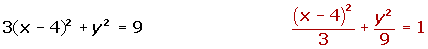

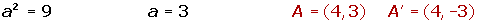
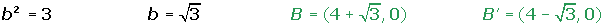
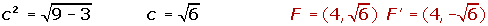

3
Determine the equations of the following ellipses using the information given:
1
2
3
4 
4
Determine the equation of the ellipse that is centered at (0, 0), passes through the point (2, 1) and whose minor axis is 4.

5
The focal length of an ellipse is 4 and the distance from a point on the ellipse is 2 and 6 units from each foci respectively. Calculate the equation of the ellipse if it is centered at (0, 0).

6
Determine the equation of the ellipse which is centered at (0, 0) and passes through the points:.
7
Find the coordinates of the midpoint of the chord in the line: x + 2y − 1 = 0 which intersects the ellipse: x2 + 2y2 = 3.
8
Determine the equation of the ellipse centered at (0, 0) whose focal length is and the area of a rectangle in which the ellipse is inscribed within is 80 u2.
9
Find the equation of the locus of points P (x, y) whose sum of distances to the fixed points (4, 2) and (−2, 2) is equal to 8.
10
Determine the equation of the ellipse centered at (0, 0) knowing that one of its vertices is 8 units from a focus and 18 from the other.
11
Determine the equation of the ellipse centered at (0, 0) knowing that it passes through the point (0, 4) and its eccentricity is 3/5.